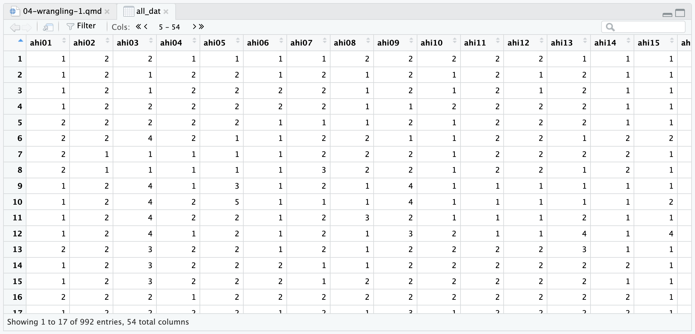

4 Data wrangling 1: Join, select, and mutate
In this chapter, we start our exploration of data wrangling. Some of you might have experience painstakingly copying and pasting values into new columns or trying to match up values from multiple spreadsheets. As well as taking a long time, there is so much room for error as you might repeat or miss values.
We have mentioned a few times now the benefits of working with R/RStudio to develop reproducible research practices over the first few chapters. But, if you take nothing else away from these materials, developing your data wrangling skills is one of the primary benefits that will benefit you in many assessments and careers. Researchers actually spend far more of their time cleaning and preparing their data than they spend analysing it. Dasu & Johnson (2003) estimated that up to 80% of time spent on data analysis involves data preparation tasks! Although every data set presents unique challenges, there are some systematic principles that you will constantly use to make your analyses less error-prone and more efficient. Our mantra is: the data changes but the skills stay the same.
Over the next three chapters, we are going to introduce you to a range of functions within the
Chapter Intended Learning Outcomes (ILOs)
By the end of this chapter, you will be able to:
Join two data sets by matching one or more identifying columns in common.
Select a range and reorder variables in your data set.
Arrange values in numerical or alphabetical order.
Modify or create variables, such as recoding values or creating new groups.
4.1 Chapter preparation
4.1.1 Introduction to the data set
For this chapter, we are using open data from Woodworth et al. (2018) one more time. In the last two chapters, we asked you to trust us and copy some code until we reached data wrangling, and now is the time to fill in those gaps. If you need a reminder, the abstract of their article is:
We present two datasets. The first dataset comprises 992 point-in-time records of self-reported happiness and depression in 295 participants, each assigned to one of four intervention groups, in a study of the effect of web-based positive-psychology interventions. Each point-in-time measurement consists of a participant’s responses to the 24 items of the Authentic Happiness Inventory and to the 20 items of the Center for Epidemiological Studies Depression (CES-D) scale. Measurements were sought at the time of each participant’s enrolment in the study and on five subsequent occasions, the last being approximately 189 days after enrolment. The second dataset contains basic demographic information about each participant.
In summary, we have one data set containing demographic information about participants and a second data set containing measurements of two scales on happiness and depression.
4.1.2 Organising your files and project for the chapter
Before we can get started, you need to organise your files and project for the chapter, so your working directory is in order.
In your folder for research methods and the book
ResearchMethods1_2/Quant_Fundamentals, create a new folder calledChapter_04_06_datawrangling. As we are spending three chapters on data wrangling, we will work within one folder. WithinChapter_04_06_datawrangling, create two new folders calleddataandfigures.Create an R Project for
Chapter_04_06_datawranglingas an existing directory for your chapter folder. This should now be your working directory.We will work within one folder, but create a new R Markdown for each chapter. Create a new R Markdown document and give it a sensible title describing the chapter, such as
04 Data Wrangling 1. Delete everything below line 10 so you have a blank file to work with and save the file in yourChapter_04_06_datawranglingfolder.If you already have the two files from chapter 3, copy and paste them into the
data/folder. If you need to download them again, the links are data file one (ahi-cesd.csv) and data file two (participant-info.csv). Right click the links and select “save link as”, or clicking the links will save the files to your Downloads. Make sure that both files are saved as “.csv”. Save or copy the file to yourdata/folder withinChapter_04_06_datawrangling.
You are now ready to start working on the chapter!
If we support you to use the online University of Glasgow R Server, working with files is a little different. If you downloaded R / RStudio to your own computer or you are using one of the library/lab computers, please ignore this section.
Log on to the R server using the link we provided to you.
In the file pane, click
New folderand create the same structure we demonstrated above.Download these two data files which we used in Chapter 3. Data file one: ahi-cesd.csv. Data file two: participant-info.csv. Save the two files into the
datafolder you created for chapter 3. To download a file from this book, right click the link and select “save link as”. Make sure that both files are saved as “.csv”. Do not open them on your machine as often other software like Excel can change setting and ruin the files.Now that the files are stored on your computer, go to RStudio on the server and click
UploadthenBrowseand choose the folder for the chapter you are working on.Click
Choose fileand go and find the data you want to upload.
4.1.3 Activity 1 - Load tidyverse and read the data files
As the first activity, try and test yourself by loading
4.2 Tidyverse and the dplyr package
So far, we have loaded a package called
In chapter 3, we introduced you to the package
The
| Function | Description |
|---|---|
*_join() |
Add columns from two data sets by matching observations |
select() |
Include or exclude certain variables (columns) |
mutate() |
Create new variables (columns) |
arrange() |
Change the order of observations (rows) |
filter() |
Include or exclude certain observations (rows) |
group_by() |
Organize the observations (rows) into groups |
summarise() |
Create summary variables for groups of observations |
Just looking at the names gives you some idea of what the functions do. For example, select() selects columns and arrange() orders observations. You will be surprised by how far you can get with data wrangling using just these functions. There will always be unique problems to solve, but these functions cover the most common that apply to almost every data set.
In this chapter, we focus on the *_join() series of functions, select(), arrange(), and mutate().
4.3 Joining two data frames with *_join() functions
The first thing we will do is combine data files. We have two files, dat and pinfo, but what we really want is a single file that has both the happiness and depression scores and the demographic information about the participants as it makes it easier to work with the combined data.
To do this, we are going to use the function inner_join(). So far, we have described these types of functions as *_join(). This is because there are a series of functions that join two data sets in slightly different ways. You do not need to memorise these, but it might be useful to refer back to later.
| Join function | Description |
|---|---|
inner_join() |
Keep observations in data set x that has a matching key in data set y |
left_join() |
Keep all observations in data set x |
right_join() |
Keep all observations in data set y |
full_join() |
Keep all observations in both data set x and y |
As these functions join data sets in different ways, they will produce different sample sizes depending on the presence of missing data in one or both data sets. For example, inner_join() will be the strictest as you must have matching observations in each data set. On the other hand, full_join() will be the least strict, as you retain observations that may not exist in one data set or the other.
4.3.1 Activity 2 - Join the files together
We are going to join dat and pinfo by common identifiers. When we use inner_join(), this means we want to keep all the observations in dat that also has a corresponding identifier in pinfo. This is known as an inner-join, where you would exclude participants if they did not have a matching observation in one of the data sets.
The code below will create a new object, called all_dat, that combines the data from both dat and pinfo using the columns id and intervention to match the participants’ data across the two sets of data. id is a code or number for each unique participant and will be the most common approach you see for creating an identifier. intervention is the group the participant was placed in for the study by Woodworth et al. (2018).
Type and run the code in a new code chunk to inner join the two sets of data.
To break down what this code is doing:
all_datis the new object you created with the joined data.xis the first argument and it should be the first data set / object you want to combine.yis the second argument and it should be the second data set / object you want to combine.byis the third argument and it lists the identifier as the name(s) of the column(s) you want to combine the data by in quote marks. In this scenario, there are two identifiers common to each data set. They both contain columns called “id” and “intervention”. We have to wrap them inc()to say that there is more than one column to combine by. If there was only one common identifier, you would writeby = "id".
If your data sets have more than one common column, you must enter them all in the by argument. This tells R there are matching columns and values across the data sets. If you do not enter all the common columns, then R will add on a .x and .y when it adds them together, to label which come from each data set.
For example, try and run this code and look at the columns in all_dat2. You will see it has an extra column compared to all_dat as there is both “intervention.x” and “intervention.y”.
4.3.2 Activity 3 - Explore your data objects
Once you have run this code, you should now see the new all_dat object in the environment pane. Remember to get into the habit of exploring your data and objects as you make changes, to check your wrangling is working as intended.
There are two main ways you can do this:
- Click on the data object in the Environment pane. This will open it up as a tab in RStudio, and you will be able to scroll through the rows and columns (Figure 4.1).
One common source of confusion is not seeing all your columns when you open up a data object as a tab. This is because RStudio shows you a maximum of 50 columns at a time. If you have more than 50 columns, to see more, you must use the arrows at the top of the tab where it says “Cols:”. For example in all_dat, it will say 1-50, if you click the right arrow, it will then say 5-54 so you can see the final 4 columns.

- Use the
glimpse()function to see an overview of the data objects.
We explored this in chapter 3, but glimpse() tells you how many rows and columns your data have, plus an overview of responses per column. Note: you will see a preview of all 54 columns, but we have shortened the preview to 10 columns to take up less space in the book.
Rows: 992
Columns: 10
$ id <dbl> 12, 162, 162, 267, 126, 289, 113, 8, 185, 185, 246, 185, …
$ occasion <dbl> 5, 2, 3, 0, 5, 0, 2, 2, 2, 4, 4, 0, 4, 0, 1, 4, 0, 5, 4, …
$ elapsed.days <dbl> 182.025139, 14.191806, 33.033831, 0.000000, 202.096887, 0…
$ intervention <dbl> 2, 3, 3, 4, 2, 1, 1, 2, 3, 3, 3, 3, 1, 2, 2, 2, 3, 2, 2, …
$ ahi01 <dbl> 1, 1, 1, 1, 2, 2, 2, 2, 1, 1, 1, 1, 2, 1, 1, 2, 1, 1, 2, …
$ ahi02 <dbl> 2, 2, 2, 2, 2, 2, 1, 1, 2, 2, 2, 2, 2, 2, 2, 2, 2, 2, 3, …
$ ahi03 <dbl> 2, 1, 1, 2, 2, 4, 1, 1, 4, 4, 4, 4, 3, 3, 3, 2, 2, 2, 3, …
$ ahi04 <dbl> 1, 2, 2, 2, 2, 2, 1, 1, 1, 2, 2, 1, 2, 2, 2, 1, 2, 2, 1, …
$ ahi05 <dbl> 1, 2, 2, 2, 2, 1, 1, 1, 3, 5, 2, 2, 2, 2, 2, 2, 2, 2, 2, …
$ ahi06 <dbl> 1, 1, 2, 2, 1, 1, 1, 1, 1, 1, 1, 1, 1, 2, 2, 2, 1, 1, 1, …Now you have explored all_dat, try and use one or both of these methods to explore the original dat and pinfo objects to see how they changed. Notice how the number of rows/observations and columns change from the original objects to when you join them.
4.4 Selecting variables of interest with select()
Data sets often have a lot of variables we do not need and it can be easier to focus on just the columns we do need. In all_dat, we have 54 variables which takes ages to scroll through and it can be harder to find what you are looking for.
For the two scales on happiness and depression, we have all their items, as well as their total scores. We can create a data set that only includes the key variables and ignores all the individual items using the select() function. There are two ways you can use select: by selecting the variables you want to include, or by selecting the variables you want to ignore.
4.4.1 Activity 4 - Selecting variables you want to include
If there are a smaller number of variables you want to include, then it will be more efficient to specify which variables you want to include. Returning to the data wrangling from chapter 3, we can select the columns from all_dat that we want to keep.
To break down this code:
We are creating a new object called
summarydata.From
all_dat, we are selecting 10 columns we want to keep, which we list one by one.
In this example, the variables are in the same order as they were all_dat, but they do not need to be. You can use select() to create a new variable order if that helps you see all the important variables first. You can also rename variables as you select or reorder them, using the form new_name = old_name.
Keep in mind it is important you select variables and assign them to a new object, or overwrite the old object. Both work, but think about if you need the original object later in your analysis and you do not want to go back and rerun code to recreate it. If you just use the select function on it’s own, it does not do anything to the object, R just shows you the variables you selected:
If you have several variables in order that you want to select, you can use a shortcut to avoid typing out every single name. When you select variables, you can use the format firstcolumn:lastcolumn to select all the variables from the first column you specify until the last column.
For example, if we wanted to isolate the individual items, we could use the following code:
You can also pair this with individual variable selection:
4.4.2 Activity 5 - Selecting variables you want to ignore
Alternatively, you can also state which variables you do not want to keep. This is really handy if you want to keep many columns and only remove one or two.
For example, if we wanted to remove two variables, you add a dash (-) before the variable name:
This also works using the range method, but you must add the dash before the first and last column in the range you want to remove. For example, we can recreate summarydata one more time by removing the scale items in the middle:
You can see there were at least three different ways of creating summarydata to keep the 10 variables we want to focus on. This is an important lesson as there is often not just one unique way of completing a task in R.
When you first start coding, you might begin with the long way that makes sense to you. As you practice more, you recognise ways to simplify your code.
4.5 Arranging variables of interest with arrange()
Another handy skill is being able to change the order of observations within columns in your data set. The function arrange() will sort the rows/observations by one or more columns. This can be useful for exploring your data set and answering basic questions, such as: who was the youngest or oldest participant?
4.5.1 Activity 6 - Arranging in ascending order
Using summarydata, we can order the participants’ ages in ascending order:
To break down the code,
We create a new object called
age_ascend.We apply the function
arrange()to thesummarydataobject.We order the observations by
age, which is by default in ascending order from smallest to largest.
If you look in age_ascend, we organised the data in ascending order based on age and can see the youngest participant was 18 years old.
4.5.2 Activity 7 - Arranging in descending order
By default, arrange() sorts observations in ascending order from the smallest to largest value, or alphabetical order from A to Z. If you want to arrange observations in descending order, you can wrap the name of the variable in the desc() function.
For example, we can order participants from oldest to youngest:
This time, we can see the oldest participant was 83 years old.
4.5.3 Activity 8 - Sorting by multiple columns
Finally, you can also sort by more than one column and a combination of ascending and descending columns. Unlike select(), you might not need to save your sorted observations as a new object, you could use arrange() more as a tool to explore your data.
For example, we could look for the oldest female participant. Note: your code will show all 992 observations you could scroll through, but we show the first 10 to save space.
| id | occasion | elapsed.days | intervention | ahiTotal | cesdTotal | sex | age | educ | income |
|---|---|---|---|---|---|---|---|---|---|
| 51 | 4 | 94.905451 | 2 | 86 | 15 | 1 | 83 | 2 | 2 |
| 51 | 3 | 32.644595 | 2 | 87 | 7 | 1 | 83 | 2 | 2 |
| 51 | 0 | 0.000000 | 2 | 90 | 5 | 1 | 83 | 2 | 2 |
| 51 | 2 | 15.764178 | 2 | 90 | 4 | 1 | 83 | 2 | 2 |
| 51 | 5 | 185.852778 | 2 | 91 | 10 | 1 | 83 | 2 | 2 |
| 244 | 0 | 0.000000 | 2 | 64 | 33 | 1 | 77 | 3 | 2 |
| 244 | 1 | 7.238877 | 2 | 70 | 37 | 1 | 77 | 3 | 2 |
| 244 | 2 | 16.900289 | 2 | 71 | 16 | 1 | 77 | 3 | 2 |
| 244 | 3 | 31.251377 | 2 | 75 | 22 | 1 | 77 | 3 | 2 |
| 215 | 0 | 0.000000 | 4 | 76 | 1 | 1 | 75 | 3 | 2 |
Using summarydata and arrange(), sort the data to answer the following questions:
How old is the participant with the highest total happiness score (
ahiTotal)?What is the highest total depression score (
cesdTotal) in a female participant (remember 1 = female, 2 = male)?
- We only need to arrange by
ahiTotalin descending order to find the highest value, then look at the age column.
- We first order by
sexin ascending order so 1s are first, then descending order ofcesdTotalfor the highest value.
4.6 Modifying or creating variables with mutate()
In the final data wrangling function for this chapter, we can use the function mutate() to modify existing variables or create new variables. This is an extremely powerful and flexible function. We will not be able to cover everything you can do with it in this chapter but we will introduce you to some common tasks you might want to apply.
4.6.1 Activity 9 - Modifying existing variables
If you remember back to chapter 3, we had a problem where R interpreted variables like sex, educ, and income as numeric, but ideally we wanted to treat them as distinct categories or factors. We used mutate() to convert the three columns to factors:
To break down the code:
We overwrite
summarydataby assigning the function to an existing object name.We use the
mutate()function on the oldsummarydatadata by using it as the first argument.We can add one or more arguments to modify or create variables. Here, we modify an existing variable
sex, use an equals sign (=), then how we want to modify the variable. In this example, we convert sex to a factor by using the functionas.factor(sex).
You might not just want to turn a variable into a factor, you might want to completely recode what it’s values represent. For this, there is a function called case_match() which you can use within mutate(). For example, if we wanted to make sex easier to interpret, we could overwrite it’s values from 1 and 2:
To break down this code,
We create a new object
sex_recodeby mutating thesummarydataobject.We modify an existing variable
sexby applyingcase_match()tosex.Within
case_match(), the value on the left is the existing value in the data you want to recode. The value on the right is the new value you want to overwrite it to. So, we want to change all the 1s in the data to Female. We then add a new line for every old value we want to change.
In the previous exercise, we already converted sex to a factor. So, we had to add quote marks around the old values ("1") as they are no longer considered numeric. If you do not add the quote marks, you will get an error like Can't convert "..1 (left)" <double> to <factor>.
If you applied this step before converting sex to a factor, then 1 ~ "Female" would work. This shows why it is important to keep data types in mind as R might not know what you mean if you state one data type when it is expecting another.
Using what you just learnt about using mutate and case_match(), recode the variable income and complete the code below. These are what the numeric values mean as labels:
1 = Below average
2 = Average
3 = Above average
Check your code against the solution when you have attempted yourself first.
4.6.2 Activity 10 - Creating new variables
You can also create new variables using mutate(). There are many possibilities here, so we will demonstrate a few key principles for inspiration and you will learn how to tackle unique problems as you come to them.
In it’s simplest application, you can use mutate() to add a single value to all rows. For example, you might want to label a data set before joining with another data set so you can identify their origin. Instead of overwriting an existing variable, we specify a new variable name and the value we want to assign:
Using a similar kind of logic to case_match() we introduced you to earlier, there is an extremely flexible function called case_when() to help create new variables. Before we explain how it works, we will jump straight into an example to give you something concrete to work with.
Woodworth et al. (2018) includes scores from the Center for Epidemiological Studies Depression (CES-D) scale. Scores range from 0 to 60, with scores of 16 or more considered a cut-off for being at risk of clinical depression. We have the scores, so we can use case_when() to label whether participants are at risk or not.
To break down the code:
We overwrite
summarydataby mutating the existingsummarydataobject.We create a new variable called
depression_riskby applying thecase_when()function to the variablecesdTotal.We apply two comparisons to label responses as either “Not at risk” or “At risk”. If
cesdTotalis less than 16 (i.e., 15 or smaller), then it receives the value “Not at risk”. IfcesdTotalis more than 15 (i.e., 16 or higher), then it receives the value “At risk”.
The function case_when() applies these criteria line by line as it works through your rows. Depending on which criteria your observation meet, it receives the label “Not at risk” or “At risk”. You can also set the argument .default to assign one value for anything that does not pass any criteria you give it.
The comparisons use something called a Boolean expression. These are logical expressions which can return the values of TRUE or FALSE. To demonstrate the idea, imagine we were applying the logic manually to scores in the data. The first value is 50, so we could apply our criteria to see which one it meets:
R evaluates the first comparison as FALSE as 50 is not smaller than 16, but it evaluates the second comparison as TRUE as 50 is larger than 15. So, case_when() would apply the label “At risk” as the second statement evaluates to TRUE.
Try and pick a few more cesdTotal scores from the data and apply the criteria to see if they are evaluated as TRUE OR FALSE. It can be tricky moving from imagining what you want to do to being able to express it in code, so the more practice the better.
We have only used less than or greater than, but there are several options for expressing Boolean logic, the most common of which are:
| Operator | Name | is TRUE if and only if |
|---|---|---|
| A < B | less than | A is less than B |
| A <= B | less than or equal | A is less than or equal to B |
| A > B | greater than | A is greater than B |
| A >= B | greater than or equal | A is greater than or equal to B |
| A == B | equivalence | A exactly equals B |
| A != B | not equal | A does not exactly equal B |
| A %in% B | in | A is an element of vector B |
Boolean expressions will come up again in chapter 5 when it comes to filter(), so there will be plenty more practice as you apply your understanding to different data sets and use cases.
Using what you just learnt about using mutate and case_when(), create a new variable called happy using the ahiTotal variable and complete the code below.
The Authentic Happiness Inventory (AHI) does not have official cutoffs, but let us pretend scores of 65 or more are “happy” and scores of less than 65 are “unhappy”.
Check your code against the solution when you have attempted it yourself first.
Following the same format as depression_risk and cesdTotal, we add a new comparison for each criterion we want to use as a Boolean expression:
If you looked at the table of Boolean operators, you could also express 65 or more as:
4.7 Test yourself
To end the chapter, we have some knowledge check questions to test your understanding of the concepts we covered in the chapter. We then have some error mode tasks to see if you can find the solution to some common errors in the concepts we covered in this chapter.
4.7.1 Knowledge check
Question 1. Which of the following functions would you use if you wanted to keep only certain columns?4.7.2 Error mode
The following questions are designed to introduce you to making and fixing errors. For this topic, we focus on data wrangling using the functions inner_join(), select(), and mutate(). Remember to keep a note of what kind of error messages you receive and how you fixed them, so you have a bank of solutions when you tackle errors independently.
Create and save a new R Markdown file for these activities. Delete the example code, so your file is blank from line 10. Create a new code chunk to load tidyverse and the two data files:
Below, we have several variations of a code chunk error or misspecification. Copy and paste them into your R Markdown file below the code chunk to load tidyverse and the data. Once you have copied the activities, click knit and look at the error message you receive. See if you can fix the error and get it working before checking the answer.
Question 6. Copy the following code chunk into your R Markdown file and press knit. This…works, but we want 54 columns rather than 55 columns. Some of the columns do not look quite right?
This was a prompt to look out for duplicate columns when we do not specify all the common columns between the data sets you want to join. You join by “id” which works, but because you did not also add “intervention”, you get .x and .y appended to two “intervention” columns.
Question 7. Copy the following code chunk into your R Markdown file and press knit. You should receive an error like ! Can't subset columns that don't exist. x Column "interventnion" doesnt exist.
This is an example of a sneaky typo causing an error. R is case and spelling sensitive, so it does not know what you mean when you asked it to select the column “intervetnion” rather than “intervention”. To fix the error, you just need to fix the typo:
Question 8. Copy the following code chunk into your R Markdown file and press knit. You should receive an error like ! Cant convert "..1 (left)" <character> to <double>.
This is the opposite problem to what we warned about in the case_match section. You need to honour data types and we have not converted sex to a factor or character in this example. So, R does not know how to match the character “1” against the number/double 1 in the data. To fix the error, you need to remove the double quotes to give R a number/double like it can see in the data:
Question 9. Copy the following code chunk into your R Markdown file and press knit. We want to create two groups depending on if we consider a participant a teenager if they are younger than 20, or not a teenger if they are 20 years or older. The code below…works? This is a sneaky one, so think about the criteria we want vs the criteria we set.
```{r}
age_groups <- mutate(pinfo,
age_groups = case_when(
age < 20 ~ "Teenager",
age > 20 ~ "Not a teenager"))
```This is a really sneaky one as it does not actually affect a participant in the data, but there is a small mismatch between the criteria we want and the criteria we set.
In our “teenager” group, this is accurate as we want to classify them if they are younger than 20. However, in the “not a teenager” group we currently set the criterion if they are older than 20, i.e., 21 or older. This would mean 20 year old participants are stuck in the middle with no group.
We see this kind of mistake a lot, so think carefully about your Boolean expression and check examples in the console if you are unsure. To fix, you could use:
or
4.8 Words from this Chapter
Below you will find a list of words that were used in this chapter that might be new to you in case it helps to have somewhere to refer back to what they mean. The links in this table take you to the entry for the words in the PsyTeachR Glossary. Note that the Glossary is written by numerous members of the team and as such may use slightly different terminology from that shown in the chapter.
| term | definition |
|---|---|
| arrange() | Order the rows of a data set by the values of one or more columns. |
| boolean-expression | A logical statement in programming to evaluate a condition and return a Boolean value, which can be TRUE or FALSE. |
| case_match() | You can switch values from old to new. Statements are evaluated sequentially, meaning the old value is replaced with the first new value it matches. |
| case_when() | An if else statement to check old values against a set of criteria. Statements are evaluated sequentially, meaning each observation is checked against the criteria, and it receives the first match it passes. |
| data-wrangling | The process of preparing data for visualisation and statistical analysis. |
| function | A named section of code that can be reused. |
| inner-join | A mutating join that returns all the rows that have a match in the other table. |
| mutate() | You can create new columns that are functions of existing variables. You can also modify variables if the name is the same as an existing column. |
| package | A group of R functions. |
| select() | Select, reorder, or rename variables in your data set. |
4.9 End of Chapter
Excellent work so far! Data wrangling is a critical skill and being able to clean and prepare your data using code will save you time in the long run. Manually tidying data might seem quicker now when you are unfamilar with these functions, but it is open to errors which may not have a paper trail as you edit files. By reproducibly wrangling your data, you can still make mistakes, but they are reproducible mistakes you can fix.
In the next chapter, we start by recapping the key functions from this chapter on a new data set, then introduce you to more data wrangling functions from